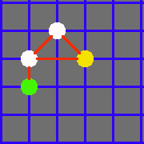

Naming a node

|  |
A simple way to draw a map
|
Naming a node
In Interactive Search Tree, user can create search map by add/delete nodes, add/delete line between two nodes.
After the user creates a search map, the user can click the show button to display animation for the search algorithm.
If the user's search map is incorrect, it will provide different visual feedback to help user fixed it.
The user also can click guide button to read the FAQ and guide.
After the user pressed show button, the application will provide search tree.
The user can choose search type that they want (Depth-First Search, Breadth-First Search)
The user can click buttons on the top to play search animation, pasue animation, resume animation, or go through animation step by step.
When search animation is playing, the search procedure will automatically print out.
CMSC 447 fall 2019 at the University of Maryland Baltimore County
Group Member:Marshall, ArishMersinger, Andrew JOshry, Yitzhas DTao, KechengWeng, Zhenbang
w3school